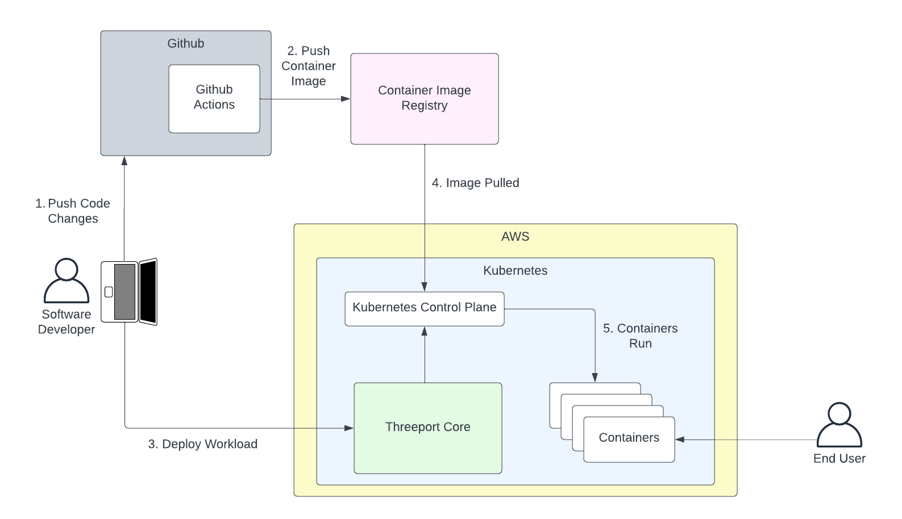

Use Cases¶
Following is an overview on how the following three roles use Threeport:
- Platform Engineers
- DevOps
- Developers
Threeport for Platform Engineers¶
Platform engineering can extend Threeport using the Threeport SDK. When an organization has a high-value, complex workload, this approach is highly recommended. It provides maximum programmatic control of app delivery resulting in greater capabilities, reliability and cost efficiency. It also requires a greater up-front engineering investment from the platform engineering team which is why using this approach is optimal for sophisticated, revenue generating applications.

The process for optimizing application delivery with platform engineering looks something like this:
- A platform engineering team uses the Threeport SDK to build a custom module for the Threeport core system. The code for this module lives in its own git repo. Experienced Go programmers with a sound understanding of Kubernetes and Threeport can usually produce a POC within a couple of weeks, even faster for simpler use cases.
- The primary asset produced from the project's CI pipeline is a container image for the Threeport controller that understands the needs of the custom workload.
- The custom controller is deployed with the rest of the Threeport core system. Threeport is now extended to include intelligent management of instances of the custom workload.
- The developers now use a custom object that requires much less configuration as the details of implementation are built into the custom Threeport controller.
- When the custom workload is created, Threeport deploys all the components of the application, stitching all the components together to produce a running, available application as soon as all resources are provisioned. In the above example a front-end component is deployed with TLS termination and network ingress from the public internet plumbed through an AWS load balancer. The back end workload is deployed and connected to a new AWS RDS database that is also spun up by Threeport. A batch workload is deployed with a new S3 bucket for assets to be processed. DNS records are created in a Route53 hosted zone to provide a domain name for connection to the load balancer's IP.
Threeport for DevOps¶
DevOps can streamline developer usage by creating definitions for the resources developers need to deliver. Most Threeport objects have two components: a definition and instance. The definition provides the configuration. The instance uses a small number of runtime parameters and references the definition to spin up the resources required. Learn more about definitions and instances in the Concepts section.

DevOps supports developers as follows:
- DevOps creates the definition configurations that can be referenced later by developers. Any number of definitions can be made available for different needs for each resource type.
- The developer creates instances from these definitions to create a new Kubernetes runtime, if needed, service dependencies like network gateways, managed dependencies like RDS databases, as well as the workload itself. The developer doesn't have to worry about any resource configuration since DevOps took care of this. They only provide runtime parameters such as which Kubernetes runtime to use for their workload.
- Threeport deploys a kubernetes runtime and any dependencies that may be needed. These dependencies can include kubernetes manifests, gateway resources such as load balancers, and managed AWS services such as RDS. All dependencies are connected and the workload is immediately available to the end user as soon as resources are up. An example configuration can be found on the Threeport GitHub repository here.
Threeport for Developers¶
Threeport allows developers to deliver the apps they build to cloud native environments.

Following is a common scenario for a developer workflow using Threeport:
- Developer pushes code to GitHub.
- The CI actions run (GitHub actions in this case) and produce a container image that is pushed to a registry such as Docker Hub or GitHub Container Registry.
- The developer uses
tptctlto deploy their workload. This makes a call to the Threeport core system and triggers it to deploy the app. Threeport will call the Kubernetes API to deploy the Kubernetes resources. If requested, Threeport can deploy AWS managed service dependencies as well as other support services to configure ingress routing from the internet, provision SSL certs, set DNS records, etc. - The image is pulled by the Kubernetes control plane.
- The app runs in containers on the Kubernetes cluster. This example shows the app running in the same Kubernetes environment as the Threeport Core, but this is optional. Threeport can deploy separate Kubernetes runtime environments as needed, and manage deployments to any cluster managed by Threeport.